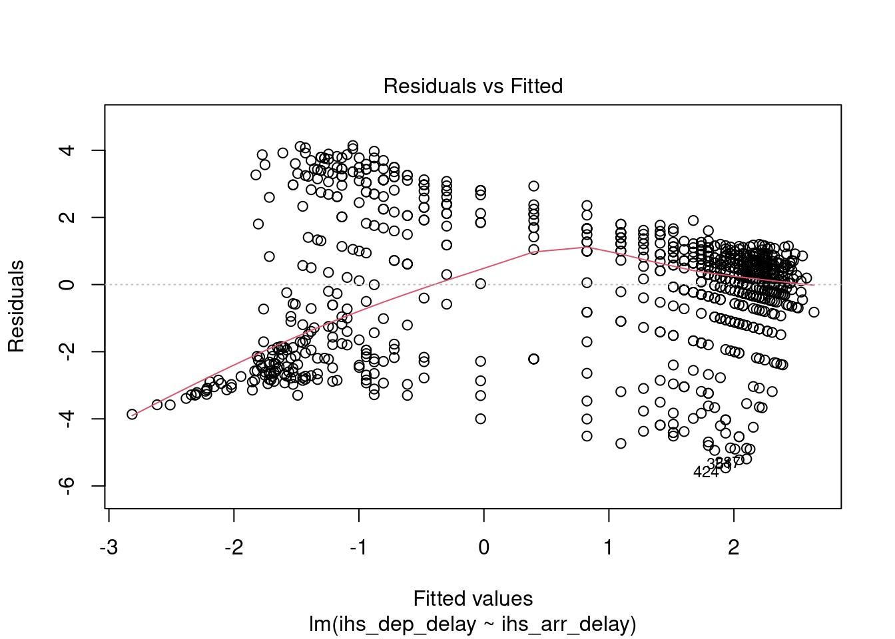
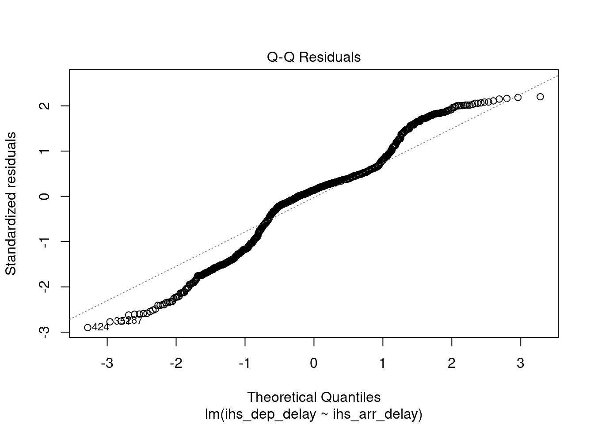
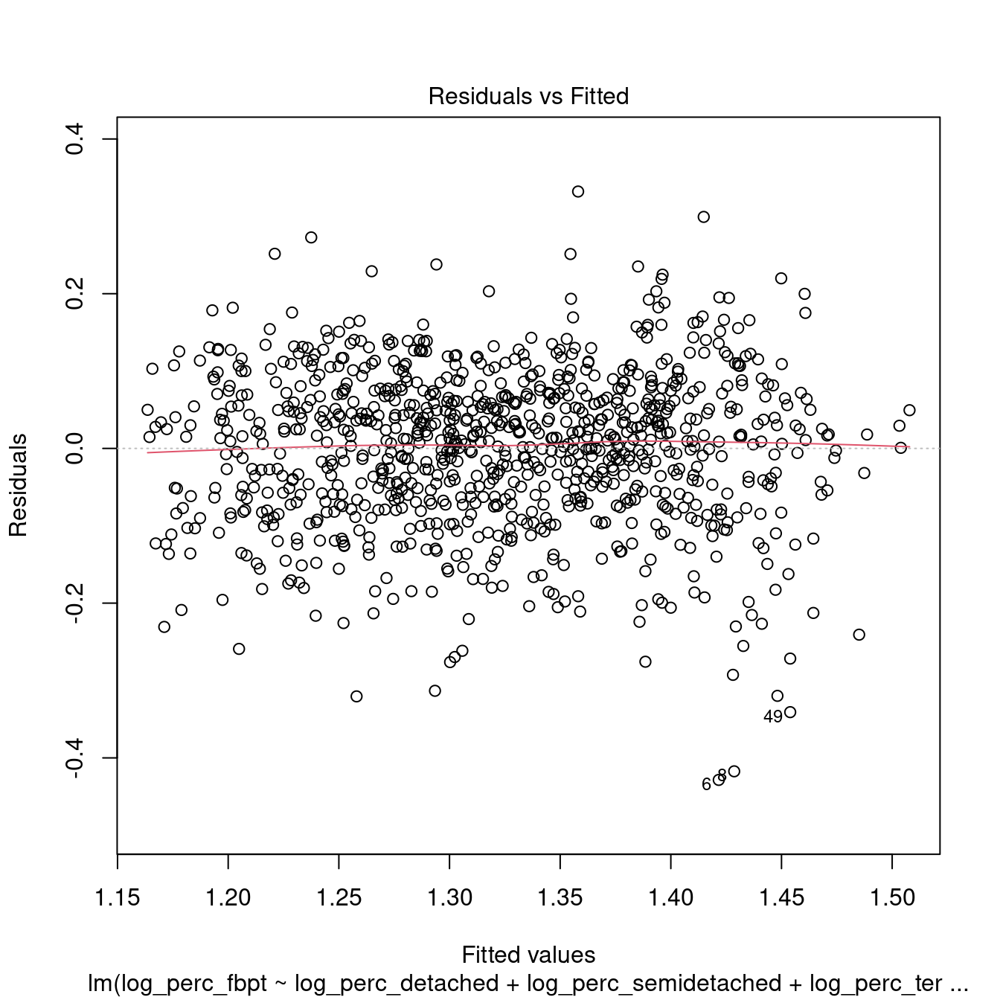
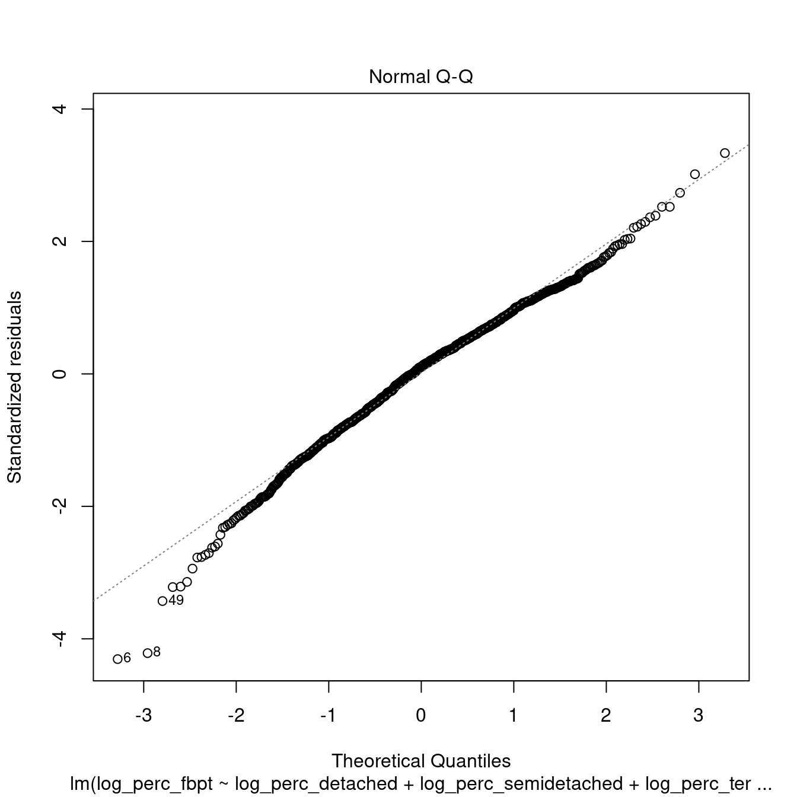
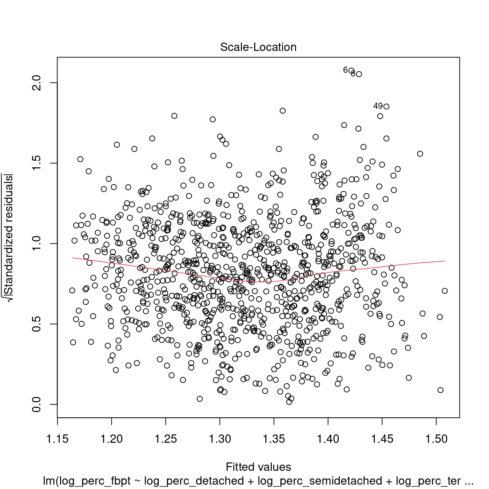
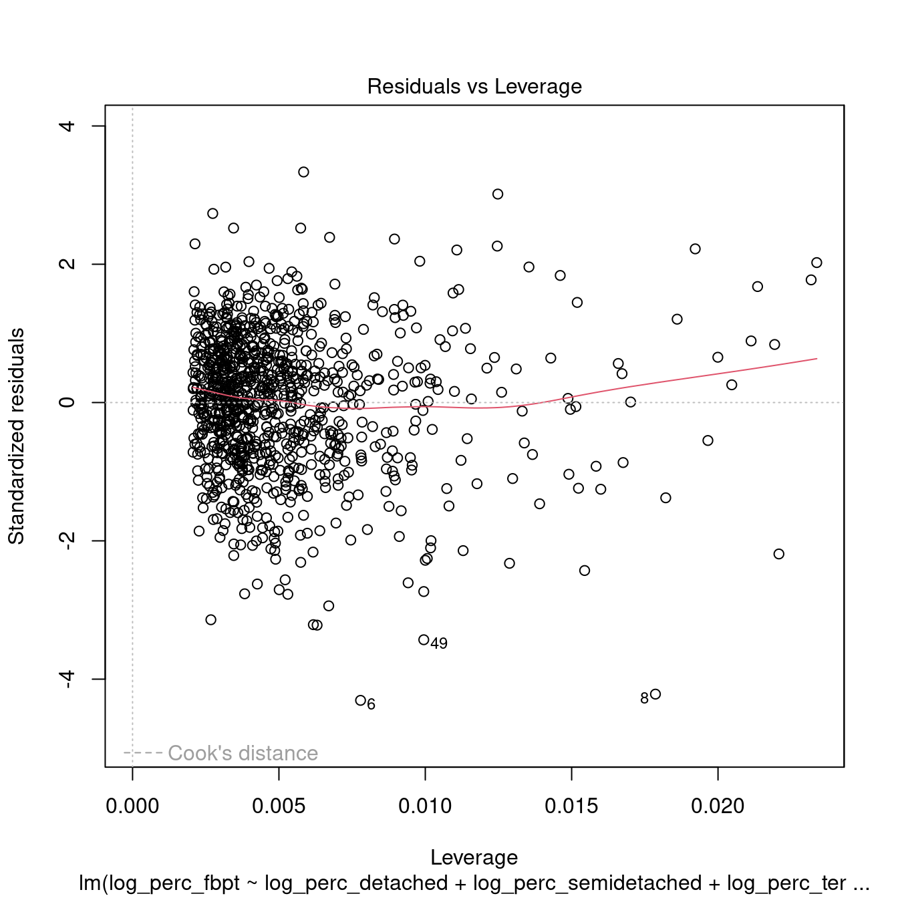
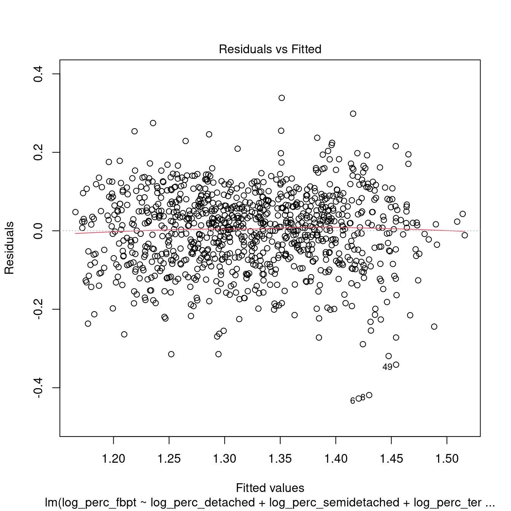
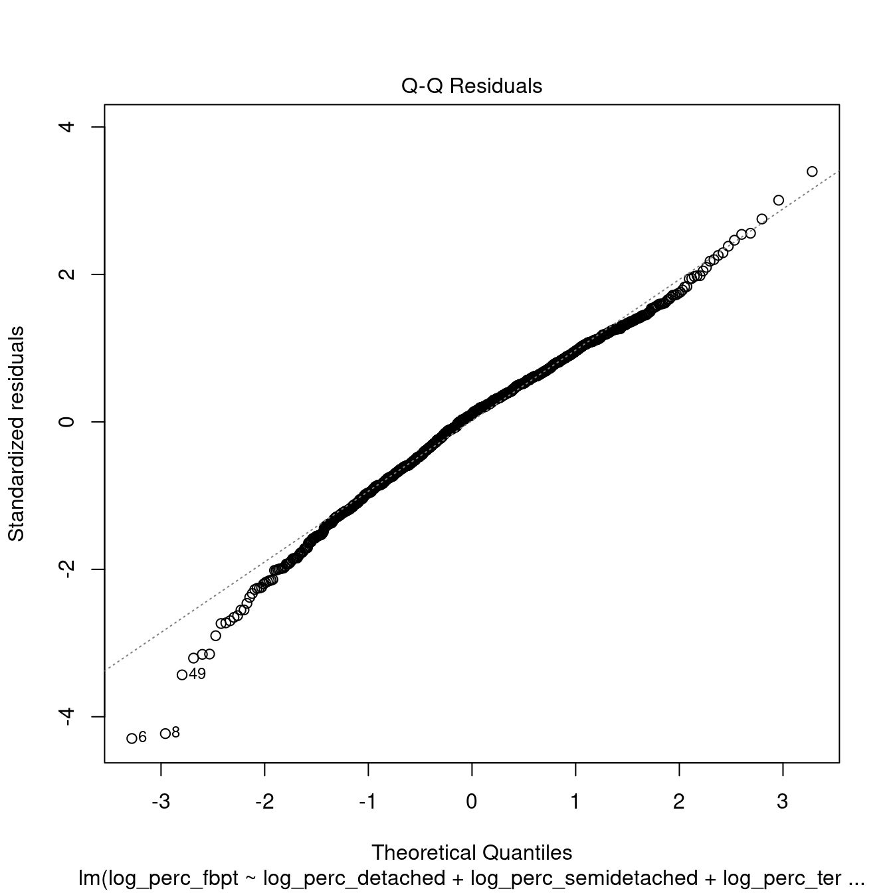
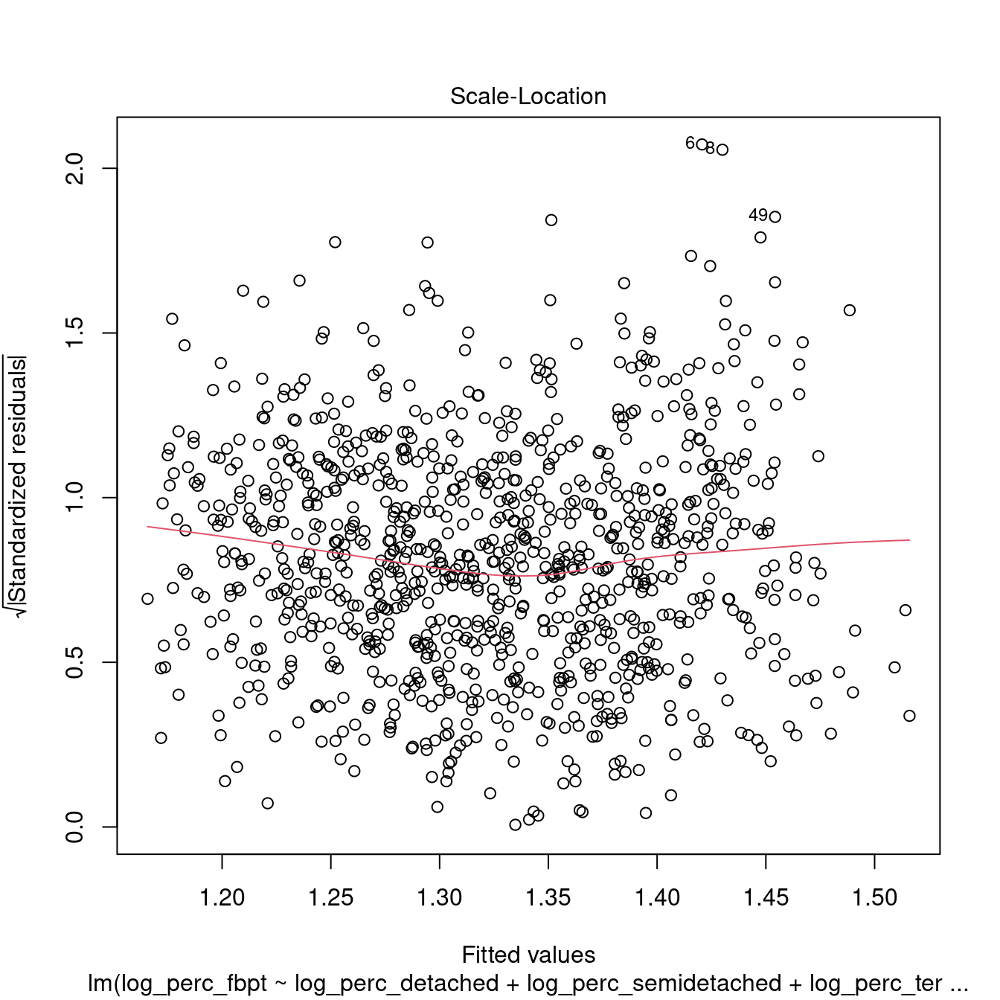

Solutions
Solutions 101
Note that you can add sections to your code, such as the “Intro” section below by selecting Code > Insert Section… from the top menu in RStudio. Those will then be visible on a right panel in the RStudio integrated editor if you select Code > Show Document Outline from the top menu. Code sections can help to visually organise your code and the Document Outline allows you to select a section and jump to it in the code.
The code below deletes all variable and function currently defined in the environment, which is generally good practice, to avoid your script interacting with objects left over from previous sessions.
Load the necessary libraries.
# Load the tidyverse
library(tidyverse)
# Load magrittr
# necessary for options 3 and 4
# of my answer to Question 101.2.4
library(magrittr)Solutions 101.1
Question 101.1.1: Write a piece of code using the pipe operator that takes as input the number 1632, calculates the logarithm to the base 10, takes the highest integer number lower than the calculated value (lower round), and verifies whether it is an integer.
1632 %>%
# calculate the logarithm to the base 10
log10() %>%
# highest integer number lower than the value
floor() %>%
# check whether it is an integer
is.integer()
# The answer is FALSE
# as the value is still of type numeric
# rather than type integer
# The code below replicates the procedure above
# but checking the value data type
1632 %>%
log10() %>%
floor() %>%
class()
# The code below replicates the procedure above
# but using as.integer to transfor the value
# to an integer type
1632 %>%
log10() %>%
floor() %>%
as.integer() %>%
class()
# As above but checking whether the value is an integer
1632 %>%
log10() %>%
floor() %>%
as.integer() %>%
is.integer()Question 101.1.2: Write a piece of code using the pipe operator that takes as input the number 1632, calculates the square root, takes the lowest integer number higher than the calculated value (higher round), and verifies whether it is an integer.
1632 %>%
# calculate the square root
sqrt() %>%
# lowest integer number higher than the value
ceiling() %>%
# check whether it is an integer
is.integer()Question 101.1.3: Write a piece of code using the pipe operator that takes as input the string "1632", transforms it into a number, and checks whether the result is Not a Number.
"1632" %>%
# transform it into a number
as.numeric() %>%
# check whether the result is Not a Number
is.nan()Question 101.1.4: Write a piece of code using the pipe operator that takes as input the string "-16.32", transforms it into a number, takes the absolute value and truncates it, and finally checks whether the result is Not Available.
"-16.32" %>%
# transform it into a number
as.numeric() %>%
# take the absolute value
abs() %>%
# truncate
trunc() %>%
# check whether the result is Not Available
is.na()Question 101.1.5: Rewrite a piece of code below by substituting the last line with the function mean(). What kind of result do you obtain? What does it represent?
The output is a numeric value representing the aritmetic mean (average) of all the petal lengths of flowers in the iris dataset.
Question 101.1.6: Further edit the code created for Question 101.1.6 by substituting Petal.Length with Petal.Width first and Species then? What kind of results do you obtain? What do they mean?
Solutions 102
Solutions 102.1
Extend the code in the script practical-102_my-script-002.R to include the code necessary to solve the questions below.
Question 101.1.1: Write a piece of code using the pipe operator and the dplyr library to generate a table showing the air time and the carrier, but only for flights starting from the JFK airport. As in the examples above, use slice_head and kable to output a nicely-formatted table containing only the first 10 rows.
# Start from the entire dataset
flights %>%
# Retain only the necessary columns
select(origin, carrier, air_time) %>%
# Retain only rows representing flights from JFK
filter(origin == "JFK") %>%
slice_head(n = 5) %>%
kable()| origin | carrier | air_time |
|---|---|---|
| JFK | AA | 160 |
| JFK | B6 | 183 |
| JFK | B6 | 140 |
| JFK | B6 | 149 |
| JFK | B6 | 158 |
Question 102.1.2: Write a piece of code using the pipe operator and the dplyr library to generate a table showing the arrival delay and the overall air time, but only for flights of October 12th. As in the examples above, use slice_head and kable to output a nicely-formatted table containing only the first 10 rows.
# Start from the entire dataset
flights %>%
# Retain only the necessary columns
select(year:day, arr_delay, air_time) %>%
# Retain only rows where month equals 10 and day equals 12
filter(month == 10 & day == 12) %>%
slice_head(n = 5) %>%
kable()| year | month | day | arr_delay | air_time |
|---|---|---|---|---|
| 2013 | 10 | 12 | -20 | 74 |
| 2013 | 10 | 12 | -27 | 181 |
| 2013 | 10 | 12 | -30 | 142 |
| 2013 | 10 | 12 | -10 | 193 |
| 2013 | 10 | 12 | 17 | 210 |
Question 102.1.3: Write a piece of code using the pipe operator and the dplyr library to generate a table showing the arrival delay, origin and destination, but only for flight leaving between 11am and 2pm. As in the examples above, use slice_head and kable to output a nicely-formatted table containing only the first 10 rows.
# Start from the entire dataset
flights %>%
# Retain only the necessary columns
select(origin, dest, dep_time, arr_delay) %>%
# Retain only rows where departure time is greater than or equal to 1100
# and departure time is also less than or equal to 1100
filter(dep_time >= 1100 & dep_time <= 1400) %>%
slice_head(n = 5) %>%
kable()| origin | dest | dep_time | arr_delay |
|---|---|---|---|
| EWR | PBI | 1101 | 13 |
| LGA | MIA | 1103 | -11 |
| EWR | SFO | 1105 | 23 |
| LGA | CMH | 1107 | -5 |
| LGA | MIA | 1109 | -23 |
Solutions 103
Solutions 103.1
Create an RMarkdown document in RStudio, using Exercise 103 as title and PDF as output. Delete all the contents except the first five lines which compose the heading. Save the document as practical-103_exercises.Rmd. Add the libraries and code necessary to read the data from the 2011_OAC_Raw_uVariables_Leicester.csv file. Create a first section of the document (e.g., adding a second heading Exercise 103.1) and add your answers to the questions below.
In order to answer the questions below, inspect the look-up table 2011_OAC_Raw_uVariables_Lookup.csv (e.g., using Microsoft Excel) to identify the columns necessary to complete the task.
Question 103.1.1: Identify the five variables which are part of the variable subdomain Housing Type and write the code necessary to compute the total number of household spaces in Leicester for each housing type.
leicester_2011OAC %>%
summarise(
u086_tot = sum(u086),
u087_tot = sum(u087),
u088_tot = sum(u088),
u089_tot = sum(u089),
u090_tot = sum(u090)
) %>%
kable()| u086_tot | u087_tot | u088_tot | u089_tot | u090_tot |
|---|---|---|---|---|
| 13390 | 44880 | 40290 | 28757 | 66 |
Question 103.1.2: Write the code necessary to compute the total number of household spaces in Leicester for each housing type grouped by 2011 OAC supergroup.
leicester_2011OAC %>%
group_by(supgrpname) %>%
summarise(
u086_tot = sum(u086),
u087_tot = sum(u087),
u088_tot = sum(u088),
u089_tot = sum(u089),
u090_tot = sum(u090)
) %>%
kable()| supgrpname | u086_tot | u087_tot | u088_tot | u089_tot | u090_tot |
|---|---|---|---|---|---|
| Constrained City Dwellers | 176 | 1495 | 941 | 1876 | 3 |
| Cosmopolitans | 296 | 580 | 3185 | 7261 | 3 |
| Ethnicity Central | 187 | 465 | 1292 | 7093 | 6 |
| Hard-Pressed Living | 618 | 7825 | 3891 | 370 | 13 |
| Multicultural Metropolitans | 7700 | 26940 | 28804 | 10990 | 40 |
| Suburbanites | 2458 | 3852 | 210 | 111 | 0 |
| Urbanites | 1955 | 3723 | 1967 | 1056 | 1 |
Question 103.1.3: Write the code necessary to compute the percentage of household spaces (i.e., over to the total number of household spaces) in Leicester for each housing type grouped by 2011 OAC supergroup.
leicester_2011OAC %>%
group_by(supgrpname) %>%
summarise(
u086_tot = sum(u086),
u087_tot = sum(u087),
u088_tot = sum(u088),
u089_tot = sum(u089),
u090_tot = sum(u090)
) %>%
mutate(
tot_hspaces =
u086_tot + u087_tot +
u088_tot + u089_tot +
u090_tot
) %>%
mutate(
u086_perc = (u086_tot / tot_hspaces) * 100,
u087_perc = (u087_tot / tot_hspaces) * 100,
u088_perc = (u088_tot / tot_hspaces) * 100,
u089_perc = (u089_tot / tot_hspaces) * 100,
u090_perc = (u090_tot / tot_hspaces) * 100
) %>%
select(
supgrpname,
u086_perc, u087_perc, u088_perc,
u089_perc, u090_perc
) %>%
kable(digits = c(0, 2, 2, 2, 2, 2))| supgrpname | u086_perc | u087_perc | u088_perc | u089_perc | u090_perc |
|---|---|---|---|---|---|
| Constrained City Dwellers | 3.92 | 33.29 | 20.95 | 41.77 | 0.07 |
| Cosmopolitans | 2.61 | 5.12 | 28.12 | 64.11 | 0.03 |
| Ethnicity Central | 2.07 | 5.14 | 14.29 | 78.44 | 0.07 |
| Hard-Pressed Living | 4.86 | 61.53 | 30.60 | 2.91 | 0.10 |
| Multicultural Metropolitans | 10.34 | 36.17 | 38.68 | 14.76 | 0.05 |
| Suburbanites | 37.07 | 58.09 | 3.17 | 1.67 | 0.00 |
| Urbanites | 22.47 | 42.78 | 22.60 | 12.14 | 0.01 |
Question 103.1.4: Modify the code written for Question 103.1.3, using the verb rename to change the column names of the columns containing the percentages to names that resemble the related housing type (e.g., perc_of_detached).
Solutions 104
Solutions 104.1
Extend the code in the script Data_Wrangling_Example.R (see code below) to include the code necessary to solve the questions below. Use the full list of variable names from the 2011 UK Census used to generate the 2011 OAC thatcan be found in the file 2011_OAC_Raw_uVariables_Lookup.csv to indetify which columns to use to complete the tasks.
# Data_Wrangling_Example.R
# Load the tidyverse
library(tidyverse)
# Load 2011 OAC data
leicester_2011OAC <-
read_csv("data/2011_OAC_Raw_uVariables_Leicester.csv")
# Load Indexes of Multiple deprivation data
leicester_IMD2015 <-
read_csv("data/IndexesMultipleDeprivation2015_Leicester.csv")
leicester_IMD2015_decile_wide <- leicester_IMD2015 %>%
# Select only Socres
filter(Measurement == "Decile") %>%
# Trim names of IndicesOfDeprivation
mutate(
IndicesOfDeprivation = str_replace_all(IndicesOfDeprivation, "\\s", "")
) %>%
mutate(
IndicesOfDeprivation = str_replace_all(IndicesOfDeprivation, "[:punct:]", "")
) %>%
mutate(
IndicesOfDeprivation = str_replace_all(IndicesOfDeprivation, "\\(", "")
) %>%
mutate(
IndicesOfDeprivation = str_replace_all(IndicesOfDeprivation, "\\)", "")
) %>%
# Spread
pivot_wider(
names_from = IndicesOfDeprivation,
values_from = Value
) %>%
# Drop columns
select(-DateCode, -Measurement, -Units)
# Join
leicester_2011OAC_IMD2015 <-
leicester_2011OAC %>%
inner_join(
leicester_IMD2015_decile_wide,
by = c("LSOA11CD" = "FeatureCode")
)Question 104.1.1: Write a piece of code using the pipe operator and the dplyr library to generate a table showing the percentage of EU citizens over total population, calculated grouping OAs by the related decile of the Index of Multiple Deprivations, but only accounting for areas classified as Cosmopolitans or Ethnicity Central or Multicultural Metropolitans.
leicester_2011OAC_IMD2015 %>%
filter(supgrpname %in% c("Cosmopolitans", "Ethnicity Central", "Multicultural Metropolitans")) %>%
group_by(IndexofMultipleDeprivationIMD) %>%
summarise(
adults_not_empl_perc = (sum(u044 + u045) / sum(Total_Population)) * 100
) %>%
kable()Question 104.1.2: Write a piece of code using the pipe operator and the dplyr library to generate a table showing the percentage of EU citizens over total population, calculated grouping OAs by the related supergroup in the 2011 OAC, but only accounting for areas in the top 5 deciles of the Index of Multiple Deprivations.
leicester_2011OAC_IMD2015 %>%
filter(IndexofMultipleDeprivationIMD <= 5) %>%
group_by(supgrpname) %>%
summarise(
eu_perc = (sum(u043 + u044 + u045) / sum(Total_Population)) * 100
) %>%
kable()Question 104.1.3: Write a piece of code using the pipe operator and the dplyr library to generate a table showing the percentage of people aged 65 and above, calculated grouping OAs by the related supergroup in the 2011 OAC and decile of the Index of Multiple Deprivations, and ordering the table by the calculated value in a descending order.
leicester_2011OAC_IMD2015 %>%
filter(IndexofMultipleDeprivationIMD <= 5) %>%
group_by(supgrpname, IndexofMultipleDeprivationIMD) %>%
summarise(
aged_65_above = (sum(u016 + u017 + u018 + u019) / sum(Total_Population)) * 100
) %>%
arrange(-aged_65_above) %>%
kable()Extend the code in the script Data_Wrangling_Example.R to include the code necessary to solve the questions below.
Question 104.1.4: Write a piece of code using the pipe operator and the dplyr and tidyr libraries to generate a long format of the leicester_2011OAC_IMD2015 table only including the values (census variables) used in Question 104.1.3.
long_table <- leicester_2011OAC_IMD2015 %>%
select(OA11CD, supgrpname, IndexofMultipleDeprivationIMD, u016, u017, u018, u019, Total_Population) %>%
pivot_longer(
# Can't combine character values (e.g. supgrpname)
# with numeric value (e.g, Total_Population) thus
# pivot only numeric columns
cols = u016:Total_Population,
names_to = "attribute",
values_to = "value"
)
long_table %>%
slice_head(n = 5) %>%
kable()
long_table_alt <- leicester_2011OAC_IMD2015 %>%
select(OA11CD, supgrpcode, IndexofMultipleDeprivationIMD, u016, u017, u018, u019, Total_Population) %>%
pivot_longer(
# Otherwise, use supgrpcode instead of supgrpname
cols = -OA11CD,
names_to = "attribute",
values_to = "value"
)
long_table_alt %>%
slice_head(n = 7) %>%
kable()Question 104.1.5: Write a piece of code using the pipe operator and the dplyr and tidyr libraries to generate a table similar to the one generated for Question 104.1.4, but showing the values as percentages over total population.
perc_long_table <- leicester_2011OAC_IMD2015 %>%
select(OA11CD, supgrpname, IndexofMultipleDeprivationIMD, u016, u017, u018, u019, Total_Population) %>%
mutate(
perc_u016 = (u016 / Total_Population) * 100,
perc_u017 = (u017 / Total_Population) * 100,
perc_u018 = (u018 / Total_Population) * 100,
perc_u019 = (u019 / Total_Population) * 100
) %>%
select(OA11CD, supgrpname, IndexofMultipleDeprivationIMD, perc_u016, perc_u017, perc_u018, perc_u019) %>%
pivot_longer(
# Can't combine character values (e.g. supgrpname)
# with numeric value (e.g, Total_Population) thus
# pivot only numeric columns
cols = perc_u016:perc_u019,
names_to = "attribute",
values_to = "value"
)
perc_long_table %>%
slice_head(n = 5) %>%
kable()Solutions 201
Solutions 201.1
Open the Leicester_population project used in previous chapters and extend the “Exploring deprivation indices in Leicester” document to include the code necessary to solve the questions below. Use the full list of variable names from the 2011 UK Census used to generate the 2011 OAC that can be found in the file 2011_OAC_Raw_uVariables_Lookup.csv to indetify which columns to use to complete the tasks.
Question 201.1.1: Write a piece of code to create a chart showing the percentage of EU citizens over total population for each decile of the Index of Multiple Deprivations
leicester_2011OAC_IMD2015 %>%
group_by(IndexofMultipleDeprivationIMD) %>%
summarise(
eu_perc = (sum(u043 + u044 + u045) / sum(Total_Population)) * 100
) %>%
ggplot(
aes(
x = eu_perc,
# Note that it is necessary to convert the index
# to a factor, otherwise it is interpreted as a number
y = as_factor(IndexofMultipleDeprivationIMD)
)
) +
geom_col() +
theme_bw()Alternatively.
leicester_2011OAC_IMD2015 %>%
group_by(IndexofMultipleDeprivationIMD) %>%
summarise(
eu_perc = (sum(u043 + u044 + u045) / sum(Total_Population)) * 100
) %>%
mutate(
reminder = 100 - eu_perc
) %>%
pivot_longer(
cols = -IndexofMultipleDeprivationIMD,
names_to = "country_of_origin",
values_to = "percentage"
) %>%
ggplot(
aes(
x = percentage,
# Note that it is necessary to convert the index
# to a factor, otherwise it is interpreted as a number
y = as_factor(IndexofMultipleDeprivationIMD),
fill = country_of_origin
)
) +
geom_col() +
theme_bw()Question 201.1.2: Write a piece of code to create a chart showing the relationship between the percentage of EU citizens over total population with the related score of the Index of Multiple Deprivations, and illustrating also the 2011 OAC class of each OA.
# Use a similar code as used in Exercise 104
# but filtering in the Scores rather than the deciles
leicester_IMD2015_score_wide <- leicester_IMD2015 %>%
# Select only Socres
filter(Measurement == "Score") %>%
# Trim names of IndicesOfDeprivation
mutate(
IndicesOfDeprivation = str_replace_all(IndicesOfDeprivation, "\\s", "")
) %>%
mutate(
IndicesOfDeprivation = str_replace_all(IndicesOfDeprivation, "[:punct:]", "")
) %>%
mutate(
IndicesOfDeprivation = str_replace_all(IndicesOfDeprivation, "\\(", "")
) %>%
mutate(
IndicesOfDeprivation = str_replace_all(IndicesOfDeprivation, "\\)", "")
) %>%
# Spread
pivot_wider(
names_from = IndicesOfDeprivation,
values_from = Value
) %>%
# Drop columns
select(-DateCode, -Measurement, -Units)
# Join
leicester_2011OAC_IMD2015_score <-
leicester_2011OAC %>%
inner_join(
leicester_IMD2015_score_wide,
by = c("LSOA11CD" = "FeatureCode")
)
leicester_2011OAC_IMD2015_score %>%
mutate(
eu_perc = ((u043 + u044 + u045) / Total_Population) * 100
) %>%
ggplot(
aes(
x = eu_perc,
y = IndexofMultipleDeprivationIMD,
colour = fct_reorder(supgrpname, supgrpcode)
)
) +
geom_point() +
scale_fill_manual(
values = c("#e41a1c", "#f781bf", "#ff7f00", "#a65628", "#984ea3", "#377eb8", "#ffff33")
) +
theme_bw()Question 201.1.3: Write a piece of code to create a chart showing the relationship between the percentage of people aged 65 and above with the related score of the Income Deprivation, and illustrating also the 2011 OAC class of each OA.
leicester_2011OAC_IMD2015_score %>%
mutate(
aged_65_above = ((u016 + u017 + u018 + u019) / Total_Population) * 100
) %>%
ggplot(
aes(
x = aged_65_above,
y = LivingEnvironmentDeprivationDomain,
colour = fct_reorder(supgrpname, supgrpcode)
)
) +
geom_point() +
scale_fill_manual(
values = c("#e41a1c", "#f781bf", "#ff7f00", "#a65628", "#984ea3", "#377eb8", "#ffff33")
) +
theme_bw()Question 201.1.4: What does the graph produced for Question 201.1.3 mean? Write up to 100 words explaining what conclusions can be drawn from the graph – remember that “the larger the score, the more deprived the area”.
Question 201.1.5: Identify the index of multiple deprivation that most closely relate to the percentage of people per OA whose “day-to-day activities limited a lot or a little” based on the “Standardised Illness Ratio”.
Solutions 202
Solutions 202.1
Create a new RMarkdown document, and add the code necessary to recreate the table leic_2011OAC_20to24 used in the example above. Use the code below to re-shape the table leic_2011OAC_20to24 by pivoting the perc_age_20_to_24 column wider into multiple columns using supgrpname as new column names.
leic_2011OAC_20to24_supgrp <- leic_2011OAC_20to24 %>%
pivot_wider(
names_from = supgrpname,
values_from = perc_age_20_to_24
)That manipulation creates one column per supergroup, containing the perc_age_20_to_24 if the OA is part of that supergroup, or an NA value if the OA is not part of the supergroup. The transformation is illustrated in the two tables below. The first shows an extract from the original leic_2011OAC_20to24 dataset, followed by the wide version leic_2011OAC_20to24_supgrp.
| OA11CD | supgrpname | perc_age_20_to_24 |
|---|---|---|
| E00068657 | HP | 6.053 |
| E00068658 | MM | 6.964 |
| E00068659 | MM | 8.383 |
| E00068660 | MM | 4.643 |
| E00068661 | MM | 10.625 |
| E00068662 | MM | 8.284 |
| E00068663 | MM | 8.357 |
| E00068664 | MM | 3.597 |
| E00068665 | MM | 7.068 |
| E00068666 | MM | 5.864 |
| OA11CD | SU | CP | MM | EC | CD | HP | UR |
|---|---|---|---|---|---|---|---|
| E00068657 | NA | NA | NA | NA | NA | 6.053 | NA |
| E00068658 | NA | NA | 6.964 | NA | NA | NA | NA |
| E00068659 | NA | NA | 8.383 | NA | NA | NA | NA |
| E00068660 | NA | NA | 4.643 | NA | NA | NA | NA |
| E00068661 | NA | NA | 10.625 | NA | NA | NA | NA |
| E00068662 | NA | NA | 8.284 | NA | NA | NA | NA |
| E00068663 | NA | NA | 8.357 | NA | NA | NA | NA |
| E00068664 | NA | NA | 3.597 | NA | NA | NA | NA |
| E00068665 | NA | NA | 7.068 | NA | NA | NA | NA |
| E00068666 | NA | NA | 5.864 | NA | NA | NA | NA |
Question 202.1.1: The code below uses the newly created leic_2011OAC_20to24_supgrp table to calculate the descriptive statistics calculated for the variable leic_2011OAC_20to24 for each supergroup. Is leic_2011OAC_20to24 normally distributed in any of the subgroups? If yes, which supergroups and based on which values do you justify that claim? (Write up to 200 words)
| SU | CP | MM | EC | CD | HP | UR | |
|---|---|---|---|---|---|---|---|
| nbr.val | 54.000 | 83.000 | 573.000 | 57.000 | 36.000 | 101.000 | 65.000 |
| nbr.null | 0.000 | 0.000 | 0.000 | 0.000 | 0.000 | 0.000 | 0.000 |
| nbr.na | 915.000 | 886.000 | 396.000 | 912.000 | 933.000 | 868.000 | 904.000 |
| min | 1.462 | 3.141 | 2.490 | 2.066 | 1.064 | 1.515 | 2.256 |
| max | 9.562 | 60.751 | 52.507 | 36.299 | 12.963 | 11.261 | 13.505 |
| range | 8.100 | 57.609 | 50.018 | 34.233 | 11.899 | 9.746 | 11.249 |
| sum | 295.867 | 2646.551 | 5214.286 | 838.415 | 252.108 | 619.266 | 372.010 |
| median | 5.476 | 30.457 | 7.880 | 10.881 | 6.854 | 6.053 | 5.380 |
| mean | 5.479 | 31.886 | 9.100 | 14.709 | 7.003 | 6.131 | 5.723 |
| SE.mean | 0.233 | 1.574 | 0.230 | 1.373 | 0.471 | 0.172 | 0.264 |
| CI.mean.0.95 | 0.467 | 3.131 | 0.452 | 2.751 | 0.956 | 0.341 | 0.528 |
| var | 2.929 | 205.556 | 30.285 | 107.523 | 7.983 | 2.980 | 4.545 |
| std.dev | 1.712 | 14.337 | 5.503 | 10.369 | 2.825 | 1.726 | 2.132 |
| coef.var | 0.312 | 0.450 | 0.605 | 0.705 | 0.403 | 0.282 | 0.372 |
| skewness | 0.005 | 0.067 | 3.320 | 0.633 | 0.322 | 0.124 | 1.042 |
| skew.2SE | 0.008 | 0.127 | 16.266 | 1.001 | 0.410 | 0.258 | 1.753 |
| kurtosis | -0.391 | -0.825 | 15.143 | -1.009 | -0.142 | 0.220 | 1.441 |
| kurt.2SE | -0.306 | -0.789 | 37.156 | -0.810 | -0.093 | 0.231 | 1.229 |
| normtest.W | 0.991 | 0.980 | 0.684 | 0.889 | 0.965 | 0.993 | 0.937 |
| normtest.p | 0.954 | 0.239 | 0.000 | 0.000 | 0.310 | 0.886 | 0.002 |
We can set a p < .01 threshold, which is reasonable for the number of cases in the dataset (hundreds, at least for some of the 2011OAC supergroups). We can claim that leic_2011OAC_20to24 is normally distributed in the supergroups Suburbanites (SU), Cosmopolitans (CP), Constrained City Dwellers (CD) and Hard-Pressed Living (HP), as the normtest.p value is above 0.01, which allows us to reject the null hypothesis. The variable leic_2011OAC_20to24 seems instead not to be normally distributed for Multicultural Metropolitans (MM), Ethnicity Central (EC) and Urbanites (UR). That is also further illustrated by the graphs below.
leic_2011OAC_20to24 %>%
filter(supgrpname %in% c("SU", "CP", "CD", "HP")) %>%
ggplot(
aes(
x = perc_age_20_to_24
)
) +
geom_histogram(
aes(
y = ..density..
)
) +
facet_wrap(
vars(supgrpname),
ncol = 2,
scales = "free"
) +
ggtitle("Normally distributed") +
theme_bw()
leic_2011OAC_20to24 %>%
filter(supgrpname %in% c("MM", "EC", "UR")) %>%
ggplot(
aes(
x = perc_age_20_to_24
)
) +
geom_histogram(
aes(
y = ..density..
)
) +
facet_wrap(
vars(supgrpname),
ncol = 2,
scales = "free"
) +
ggtitle("Not normally distributed") +
theme_bw()
Question 202.1.2: Write the code necessary to test again the normality of leic_2011OAC_20to24 for the supergroups where the analysis conducted for Question 202.1.1 indicated they are normal, using the function shapiro.test, and draw the respective Q-Q plot.
Example for Hard-Pressed Living (HP).
##
## Shapiro-Wilk normality test
##
## data: .
## W = 0.99303, p-value = 0.8863
leic_2011OAC_20to24 %>%
filter(supgrpname == "HP") %>%
ggplot(
aes(
sample = perc_age_20_to_24
)
) +
stat_qq() +
stat_qq_line()Question 202.1.3: Observe the output of the Levene’s test executed below. What does the result tell you about the variance of perc_age_20_to_24 in supergroups?
Note that the leveneTest was not designed to work with a Tidyverse approach. As such, the code below uses the . argument placeholder to specify that the input table leic_2011OAC_20to24 which is coming down from the pipe should be used as argument for the data parameter.
leic_2011OAC_20to24 %>%
leveneTest(
perc_age_20_to_24 ~ supgrpname,
data = .
)## Levene's Test for Homogeneity of Variance (center = median)
## Df F value Pr(>F)
## group 6 62.011 < 2.2e-16 ***
## 962
## ---
## Signif. codes: 0 '***' 0.001 '**' 0.01 '*' 0.05 '.' 0.1 ' ' 1If significant, the Levene’s test indicates that the variance is different in different levels. As before, we can set a p < .01 threshold. In the output above, the p value (Pr(>F)) is much lower than our threshold, indicating that the test is significance. Thus, the perc_age_20_to_24 has different variance for different 2011OAc supergroups.
Solutions 203
Solutions 203.1
Create a new RMarkdown document, and add the code necessary to oad the 2011_OAC_Raw_uVariables_Leicester.csv dataset.
library(tidyverse)
library(magrittr)
library(knitr)
library(pastecs)
leicester_2011OAC <- read_csv("2011_OAC_Raw_uVariables_Leicester.csv")Question 203.1.1: Check whether the values of mean age (u020) are normally distributed, and whether they can be transformed into a normally distributed set using logarithmic or inverse hyperbolic sine functions.
Start from exploring the variable distribution.
leicester_2011OAC %>%
ggplot(aes(
x = u020
)) +
geom_histogram() +
theme_bw()## `stat_bin()` using `bins = 30`. Pick better value with `binwidth`.
leicester_2011OAC %>%
pull(u020) %>%
shapiro.test()##
## Shapiro-Wilk normality test
##
## data: .
## W = 0.9663, p-value = 3.476e-14The variable u020 is clearly not normally distributed, probably mostly due to a long tail on the right side.
Thus, we can try transform the variable using a logarithmic transformation or a inverse hyperbolic sine transformation. Let’s try both.
leicester_2011OAC_trans <-
leicester_2011OAC %>%
mutate(
log10_u020 = log10(u020),
ihs_u020 = asinh(u020)
)
leicester_2011OAC_trans %>%
ggplot(aes(
sample = log10_u020
)) +
stat_qq() +
stat_qq_line() +
theme_bw()
leicester_2011OAC_trans %>%
ggplot(aes(
x = log10_u020
)) +
geom_histogram() +
theme_bw()## `stat_bin()` using `bins = 30`. Pick better value with `binwidth`.
leicester_2011OAC_trans %>%
pull(log10_u020) %>%
shapiro.test()##
## Shapiro-Wilk normality test
##
## data: .
## W = 0.99474, p-value = 0.001888
leicester_2011OAC_trans %>%
ggplot(aes(
x = ihs_u020
)) +
geom_histogram() +
theme_bw()## `stat_bin()` using `bins = 30`. Pick better value with `binwidth`.
leicester_2011OAC_trans %>%
ggplot(aes(
sample = ihs_u020
)) +
stat_qq() +
stat_qq_line() +
theme_bw()
leicester_2011OAC_trans %>%
pull(ihs_u020) %>%
shapiro.test()##
## Shapiro-Wilk normality test
##
## data: .
## W = 0.99473, p-value = 0.001874Even using a logarithmic or inverse hyperbolic sine transformation, the variable u020 is still not normally distributed. The p-values are higher compared to the original variable, but still well below the \(0.01\) threshold. As visible in the charts, the transformed variables still show some level of long tails on both sides.
Question 203.1.2: Check whether the values of mean age (u020) are normally distributed when looking at the different 2011OAC supergroups separately. Check whether they can be transformed to a normally distributed set using logarithmic or inverse hyperbolic sine functions.
Note how the code below pivotes the table to obtain one column per 2011OAC supergroup.
leicester_2011OAC %>%
select(OA11CD, supgrpname, u020) %>%
pivot_wider(
id_cols = OA11CD,
names_from = supgrpname,
names_prefix = "u020 ",
values_from = u020
) %>%
select(-OA11CD) %>%
stat.desc(
basic = FALSE,
desc = FALSE,
norm = TRUE
) %>%
kable(digits = 2)| u020 Suburbanites | u020 Cosmopolitans | u020 Multicultural Metropolitans | u020 Ethnicity Central | u020 Constrained City Dwellers | u020 Hard-Pressed Living | u020 Urbanites | |
|---|---|---|---|---|---|---|---|
| skewness | 0.83 | 1.15 | 0.56 | 1.81 | 1.40 | 1.42 | 1.04 |
| skew.2SE | 1.27 | 2.17 | 2.76 | 2.87 | 1.78 | 2.96 | 1.74 |
| kurtosis | 1.24 | 1.54 | 0.64 | 6.13 | 1.74 | 2.77 | 3.56 |
| kurt.2SE | 0.97 | 1.47 | 1.58 | 4.92 | 1.14 | 2.91 | 3.04 |
| normtest.W | 0.96 | 0.91 | 0.98 | 0.87 | 0.86 | 0.89 | 0.92 |
| normtest.p | 0.07 | 0.00 | 0.00 | 0.00 | 0.00 | 0.00 | 0.00 |
leicester_2011OAC_trans %>%
select(OA11CD, supgrpname, log10_u020) %>%
pivot_wider(
id_cols = OA11CD,
names_from = supgrpname,
names_prefix = "log10 u020 ",
values_from = log10_u020
) %>%
select(-OA11CD) %>%
stat.desc(
basic = FALSE,
desc = FALSE,
norm = TRUE
) %>%
kable(digits = 2)| log10 u020 Suburbanites | log10 u020 Cosmopolitans | log10 u020 Multicultural Metropolitans | log10 u020 Ethnicity Central | log10 u020 Constrained City Dwellers | log10 u020 Hard-Pressed Living | log10 u020 Urbanites | |
|---|---|---|---|---|---|---|---|
| skewness | 0.46 | 0.51 | 0.14 | 0.88 | 0.94 | 0.81 | 0.21 |
| skew.2SE | 0.71 | 0.97 | 0.69 | 1.39 | 1.20 | 1.69 | 0.35 |
| kurtosis | 0.44 | 0.23 | 0.01 | 1.77 | 0.36 | 1.14 | 1.78 |
| kurt.2SE | 0.34 | 0.22 | 0.01 | 1.42 | 0.23 | 1.19 | 1.51 |
| normtest.W | 0.98 | 0.97 | 1.00 | 0.95 | 0.92 | 0.95 | 0.95 |
| normtest.p | 0.64 | 0.04 | 0.51 | 0.02 | 0.02 | 0.00 | 0.02 |
leicester_2011OAC_trans %>%
select(OA11CD, supgrpname, ihs_u020) %>%
pivot_wider(
id_cols = OA11CD,
names_from = supgrpname,
names_prefix = "ihs u020 ",
values_from = ihs_u020
) %>%
select(-OA11CD) %>%
stat.desc(
basic = FALSE,
desc = FALSE,
norm = TRUE
) %>%
kable(digits = 2)| ihs u020 Suburbanites | ihs u020 Cosmopolitans | ihs u020 Multicultural Metropolitans | ihs u020 Ethnicity Central | ihs u020 Constrained City Dwellers | ihs u020 Hard-Pressed Living | ihs u020 Urbanites | |
|---|---|---|---|---|---|---|---|
| skewness | 0.46 | 0.51 | 0.14 | 0.88 | 0.94 | 0.81 | 0.21 |
| skew.2SE | 0.71 | 0.97 | 0.69 | 1.39 | 1.20 | 1.69 | 0.36 |
| kurtosis | 0.44 | 0.23 | 0.01 | 1.78 | 0.36 | 1.14 | 1.78 |
| kurt.2SE | 0.34 | 0.22 | 0.01 | 1.43 | 0.23 | 1.19 | 1.51 |
| normtest.W | 0.98 | 0.97 | 1.00 | 0.95 | 0.92 | 0.95 | 0.95 |
| normtest.p | 0.64 | 0.04 | 0.51 | 0.02 | 0.02 | 0.00 | 0.02 |
While the original u020 variable is only normally distributed (using a \(0.01\) threshold) for the Suburbanites supergroup, the transformed variables are normally distributed for all supergroups except Hard-Pressed Living.
Question 203.1.3: Is the distribution of mean age (u020) different in different 2011OAC supergroups in Leicester?
We use the variable transformed using a logarithmic transformation (which is easier to interpret than an inverse hyperbolic sine) and excluding the Hard-Pressed Living supergroup, to ensure that all groups taken into account are normally distributed. We can then test that using ANOVA.
Let’s start with a boxplot, which can also be horizontal, if the nominal variable (categories) is provides for the y aesthetic and the continuous variable is provides for the x aesthetic. In the example below, that choice makes the 2011OAC supergroup names easier to read.
leicester_2011OAC_trans %>%
select(OA11CD, supgrpname, log10_u020) %>%
filter(supgrpname != "Hard-Pressed Living") %>%
ggplot(
aes(
x = log10_u020,
y = supgrpname
)
) +
geom_boxplot() +
theme_bw()
log10_u020_supgrpname_aov <-
leicester_2011OAC_trans %>%
select(OA11CD, supgrpname, log10_u020) %>%
filter(supgrpname != "Hard-Pressed Living") %$%
aov(log10_u020 ~ supgrpname) %>%
summary()
log10_u020_supgrpname_aov## Df Sum Sq Mean Sq F value Pr(>F)
## supgrpname 5 1.049 0.20988 51.91 <2e-16 ***
## Residuals 862 3.485 0.00404
## ---
## Signif. codes: 0 '***' 0.001 '**' 0.01 '*' 0.05 '.' 0.1 ' ' 1The test is significant F(5, 862) = 51.91 with p < .01, thus we can say that the distribution of u020 across the 2011OAC supergroups, excluding Hard-Pressed Living, are different.
Solutions 203.2
Question 203.2.1: As mentioned above, when discussing movement in cities, there is an assumption that people living in the city centre live in flats and work or cycle to work, whereas people living in the suburbs live in whole houses and commute via car. Study the correlation between the presence of flats (u089) and people commuting to work on foot, bicycle or other similar means (u122) in the same OAs. Consider whether the values might need to be normalised or otherwised transformed before starting the testing procedure.
The first necessary step is to normalise the data using the variable statistical unit Total_Household_Spaces for u089 and Total_Pop_No_NI_Students_16_to_74 for u122 as suggested by the lookup table.
flats_commuting <-
leicester_2011OAC %>%
mutate(
u089n = (u089 / Total_Household_Spaces) * 100,
u122n = (u122 / Total_Pop_No_NI_Students_16_to_74) * 100
) %>%
select(OA11CD, u089n, u122n)
flats_commuting %>%
ggplot(aes(
x = u089n
)) +
geom_histogram() +
theme_bw()## `stat_bin()` using `bins = 30`. Pick better value with `binwidth`.
flats_commuting %>%
ggplot(aes(
x = u122n
)) +
geom_histogram() +
theme_bw()## `stat_bin()` using `bins = 30`. Pick better value with `binwidth`.
flats_commuting %>%
select(u089n, u122n) %>%
stat.desc(
basic = FALSE,
desc = FALSE,
norm = TRUE
) %>%
kable(digits = 2)| u089n | u122n | |
|---|---|---|
| skewness | 1.56 | 0.85 |
| skew.2SE | 9.94 | 5.40 |
| kurtosis | 1.33 | 0.85 |
| kurt.2SE | 4.23 | 2.72 |
| normtest.W | 0.74 | 0.96 |
| normtest.p | 0.00 | 0.00 |
The two plots and the table above indicate that the two variables are not normally distributed and left skewed. As such, we can try to apply a logarithmic transformation to both to try to “un-skew” them. Note how rename_with uses a purrr-style lamba shorthand to to paste log10_ in front of all column names.
flats_commuting %>%
select(u089n, u122n) %>%
mutate(
across(
everything(),
log10
)
) %>%
rename_with(
# this is a shorthand
# to paste log10_ in front
# of all column names
~ paste0("log10_", .x)
) %>%
stat.desc(
basic = FALSE,
desc = FALSE,
norm = TRUE
) %>%
kable(digits = 2)| log10_u089n | log10_u122n | |
|---|---|---|
| skewness | NaN | -0.59 |
| skew.2SE | NaN | -3.73 |
| kurtosis | NaN | 0.63 |
| kurt.2SE | NaN | 2.01 |
| normtest.W | NaN | 0.98 |
| normtest.p | NaN | 0.00 |
The presence of NaN values in the u089 column indicates that the variable includes zeros, for which the logarithm is not defined. As such, we can try using the inverse iperbolic sine.
flats_commuting %>%
select(u089n, u122n) %>%
mutate(
across(
everything(),
asinh
)
) %>%
rename_with(
# this is a shorthand
# to paste ihs_ in front
# of all column names
~ paste0("ihs_", .x)
) %>%
stat.desc(
basic = FALSE,
desc = FALSE,
norm = TRUE
) %>%
kable(digits = 2)| ihs_u089n | ihs_u122n | |
|---|---|---|
| skewness | -0.09 | -0.53 |
| skew.2SE | -0.59 | -3.40 |
| kurtosis | -1.10 | 0.43 |
| kurt.2SE | -3.51 | 1.36 |
| normtest.W | 0.96 | 0.98 |
| normtest.p | 0.00 | 0.00 |
The values are now not NaN, but still, the variables are not normally distributed. As such, we can not use Pearson’s r correlation, as one of the assumptions is not met. In first instance, we can use Spearman’s rho to assess their correlation.
flats_commuting %>%
ggplot(aes(
x = u089n,
y = u122n
)) +
geom_point() +
theme_bw()
## Warning in cor.test.default(u089n, u122n, method = "spearman"): Cannot compute
## exact p-value with ties
u089n_u122n_spearman##
## Spearman's rank correlation rho
##
## data: u089n and u122n
## S = 92011434, p-value < 2.2e-16
## alternative hypothesis: true rho is not equal to 0
## sample estimates:
## rho
## 0.3932327The output above includes the warning Warning: Cannot compute exact p-value with ties. As such, we need to check the number of ties in the dataset.
## Warning: `wt = n()` is deprecated
## ℹ You can now omit the `wt` argument## [1] 127## Warning: `wt = n()` is deprecated
## ℹ You can now omit the `wt` argument## [1] 85As the number of ties is sizable, the use of Kendall’s tau is advisable.
u089n_u122n_kendall <-
flats_commuting %$%
cor.test(
u089n, u122n,
method = "kendall"
)
u089n_u122n_kendall##
## Kendall's rank correlation tau
##
## data: u089n and u122n
## z = 12.534, p-value < 2.2e-16
## alternative hypothesis: true tau is not equal to 0
## sample estimates:
## tau
## 0.2696906The test is significant (p < .01), thus we can say that there is a relationship, which is however extremely weak. The value for tau is 0.27 indicating that the two variables share only 7.3% of variance.
Question 203.2.2: Another interesting issue to explore is the relationship between car ownership and the use of public transport. Study the correlation between the presence of households owning 2 or more cars or vans (u118) and people commuting to work via public transport (u120) or on foot, bicycle or other similar means (u122) in the same OAs. Consider whether the values might need to be normalised or otherwised transformed before starting the testing procedure.
The procedure is similar to the one seen above. The variable Total_Households should be used to normalise u118. Importantly, as the question specifies people commuting to work via public transport (u120) or on foot, bicycle or other similar means (u122) we also need to sum u120 and u122 to account for one or the other (as the answers in the census questions were mutually exclusive, only one mode could be chosen)
cas_vs_not_cars <-
leicester_2011OAC %>%
mutate(
u118n = (u118 / Total_Households) * 100,
u120u122n = ((u120 + u122) / Total_Pop_No_NI_Students_16_to_74) * 100
) %>%
select(OA11CD, u118n, u120u122n)
cas_vs_not_cars %>%
ggplot(aes(
x = u118n
)) +
geom_histogram() +
theme_bw()## `stat_bin()` using `bins = 30`. Pick better value with `binwidth`.
cas_vs_not_cars %>%
ggplot(aes(
x = u120u122n
)) +
geom_histogram() +
theme_bw()## `stat_bin()` using `bins = 30`. Pick better value with `binwidth`.
cas_vs_not_cars %>%
select(u118n, u120u122n) %>%
stat.desc(
basic = FALSE,
desc = FALSE,
norm = TRUE
) %>%
kable(digits = 2)| u118n | u120u122n | |
|---|---|---|
| skewness | 0.91 | 0.79 |
| skew.2SE | 5.78 | 5.02 |
| kurtosis | 0.46 | 1.20 |
| kurt.2SE | 1.46 | 3.83 |
| normtest.W | 0.93 | 0.97 |
| normtest.p | 0.00 | 0.00 |
Again, both variables as not normally distributed. Thus, we can try to use a logarithmic transformation to try “un-skew” them.
cas_vs_not_cars %>%
select(u118n, u120u122n) %>%
mutate(
across(
everything(),
log10
)
) %>%
rename_with(
# this is a shorthand
# to paste log10_ in front
# of all column names
~ paste0("log10_", .x)
) %>%
stat.desc(
basic = FALSE,
desc = FALSE,
norm = TRUE
) %>%
kable(digits = 2)| log10_u118n | log10_u120u122n | |
|---|---|---|
| skewness | NaN | -0.18 |
| skew.2SE | NaN | -1.13 |
| kurtosis | NaN | 0.09 |
| kurt.2SE | NaN | 0.29 |
| normtest.W | NaN | 1.00 |
| normtest.p | NaN | 0.04 |
Again, u118n includes some zero value, thus producing NaN values in the table above. As such, we can try using the inverse hyperbolic sine.
cas_vs_not_cars %>%
select(u118n, u120u122n) %>%
mutate(
across(
everything(),
asinh
)
) %>%
rename_with(
# this is a shorthand
# to paste ihs_ in front
# of all column names
~ paste0("ihs_", .x)
) %>%
stat.desc(
basic = FALSE,
desc = FALSE,
norm = TRUE
) %>%
kable(digits = 2)| ihs_u118n | ihs_u120u122n | |
|---|---|---|
| skewness | -0.95 | -0.17 |
| skew.2SE | -6.02 | -1.11 |
| kurtosis | 1.70 | 0.09 |
| kurt.2SE | 5.41 | 0.28 |
| normtest.W | 0.95 | 1.00 |
| normtest.p | 0.00 | 0.04 |
Note how ihs_u120u122n is normally distributed, but ihs_u118n is not normally distributed. So, again we can’t use Pearson’s r correlation, and we resort to use Spearman’s rho.
cas_vs_not_cars %>%
ggplot(aes(
x = u118n,
y = u120u122n
)) +
geom_point() +
theme_bw()## Warning in cor.test.default(u118n, u120u122n, method = "spearman"): Cannot
## compute exact p-value with ties
u118n_u120u122n_spearman##
## Spearman's rank correlation rho
##
## data: u118n and u120u122n
## S = 217161157, p-value < 2.2e-16
## alternative hypothesis: true rho is not equal to 0
## sample estimates:
## rho
## -0.4320643Note how the Spearman’s rho statistic is negative, indicating an inverse relationship between the to variables. That is a first indication that the more households with 2 or more cars or vans, the fewer people commute to work via public transport or on foot, bicycle or other similar means. However, again, the functions return the warning Warning: Cannot compute exact p-value with ties.
## Warning: `wt = n()` is deprecated
## ℹ You can now omit the `wt` argument## [1] 115## Warning: `wt = n()` is deprecated
## ℹ You can now omit the `wt` argument## [1] 83Again, the dataset contains a sizable number of ties, thus the use of Kendall’s tau is advisable.
u118n_u120u122n_kendall <-
cas_vs_not_cars %$%
cor.test(
u118n, u120u122n,
method = "kendall"
)
u118n_u120u122n_kendall##
## Kendall's rank correlation tau
##
## data: u118n and u120u122n
## z = -14.278, p-value < 2.2e-16
## alternative hypothesis: true tau is not equal to 0
## sample estimates:
## tau
## -0.3065051The test is significant (p < .01), thus we can say that there is an inverse relationship, which is however very weak. The value for tau is -0.307 indicating that the two variables share only 9.4% of variance.
Solutions 204
Solutions 204.1
Question 204.1.1: While linear regression modelling does not require the variables to be normally distributed, very skewed variables such as dep_delay and arr_delay might be a significant obstacle to a robust model. Is it possible to build a robust model using “un-skewed” variables?
As both variables, we can use the inverse hyperbolic sine (asinh) to “un-skew” the variables. However, as illustrated by the plot below, that “expands” the area around the origin of the two axis to the point that the linear relationship might be lost.
flights_nov_20 %>%
mutate(
ihs_dep_delay = asinh(-dep_delay),
ihs_arr_delay = asinh(-arr_delay)
) %>%
ggplot(
aes(
x = ihs_dep_delay,
y = ihs_arr_delay
)
) +
geom_point() +
coord_fixed(ratio = 1) +
theme_bw()We can still try build a model. However, as illustrated below, the relaionship has become very weak, and the model is still not robust.
delay_model_2 <- flights_nov_20 %>%
mutate(
ihs_dep_delay = asinh(-dep_delay),
ihs_arr_delay = asinh(-arr_delay)
) %$%
lm(ihs_dep_delay ~ ihs_arr_delay)
delay_model_summary_2 <- delay_model_2 %>%
summary()
delay_model_summary_2##
## Call:
## lm(formula = ihs_dep_delay ~ ihs_arr_delay)
##
## Residuals:
## Min 1Q Median 3Q Max
## -5.4610 -1.0106 0.2507 0.9211 4.1417
##
## Coefficients:
## Estimate Std. Error t value Pr(>|t|)
## (Intercept) 0.39881 0.06441 6.192 8.75e-10 ***
## ihs_arr_delay 0.48274 0.01930 25.006 < 2e-16 ***
## ---
## Signif. codes: 0 '***' 0.001 '**' 0.01 '*' 0.05 '.' 0.1 ' ' 1
##
## Residual standard error: 1.885 on 972 degrees of freedom
## Multiple R-squared: 0.3915, Adjusted R-squared: 0.3909
## F-statistic: 625.3 on 1 and 972 DF, p-value: < 2.2e-16
delay_model_2 %>%
rstandard() %>%
shapiro.test()##
## Shapiro-Wilk normality test
##
## data: .
## W = 0.96798, p-value = 8.19e-14##
## studentized Breusch-Pagan test
##
## data: .
## BP = 230.08, df = 1, p-value < 2.2e-16##
## Durbin-Watson test
##
## data: .
## DW = 1.7535, p-value = 5.175e-05
## alternative hypothesis: true autocorrelation is greater than 0

An alternative approach might be to use a double square root function – i.e., square root of positive values and square root of the opposite of the value for negative values (more on if_else in the coming weeks). However, that seems not to fully resolve the issue.
flights_nov_20 %>%
mutate(
sqrt_dep_delay =
if_else(
dep_delay >= 0,
sqrt(dep_delay),
(-1 * sqrt(-dep_delay)
)
),
sqrt_arr_delay =
if_else(
arr_delay >= 0,
sqrt(arr_delay),
(-1 * sqrt(-arr_delay)
)
)
) %>%
ggplot(
aes(
x = sqrt_dep_delay,
y = sqrt_arr_delay
)
) +
geom_point() +
coord_fixed(ratio = 1) +
theme_bw()Solutions 204.2
Question 204.2.1: Is it possible to create a model linking housing type (u086 to u090) to the number of people commuting to work via public transport (u120) or on foot, bicycle or other similar means (u122) in the same OAs?
There are five variables in the 2011OAC dataset related to housing type and two related to they type of commuting mentioned in the question (listed below). So, the first step is to extract and normalise those while also summing up the two variables related to commuting, as done in previous exercises.
-
u086: Whole house or bungalow: Detached -
u087: Whole house or bungalow: Semi-detached -
u088: Whole house or bungalow: Terraced (including end-terrace) -
u089: Flats -
u090: Caravan or other mobile or temporary structure -
u120: Public Transport -
u122: On foot, Bicycle or Other
leicester_dwellings <-
leicester_2011OAC %>%
dplyr::select(
OA11CD,
Total_Dwellings,
Total_Pop_No_NI_Students_16_to_74,
u120, u122,
u086:u090
) %>%
mutate(
# On foot, Bicycle or Other
# + Public Transport
perc_fbpt =
((u120 + u122) /
Total_Pop_No_NI_Students_16_to_74) * 100
) %>%
dplyr::mutate(
dplyr::across(
u086:u090,
#scale
function(x){ (x / Total_Dwellings) * 100 }
)
) %>%
dplyr::rename(
perc_detached = u086,
perc_semidetached = u087,
perc_terraced = u088,
perc_flats = u089,
perc_carava_tmp = u090
) %>%
# Remove columns not needed anymore
select(
-Total_Dwellings,
-Total_Pop_No_NI_Students_16_to_74,
-u120, -u122
) %>%
arrange(perc_fbpt)We can then explore the relationships between the variables using a pairs panel.
library(GGally)
leicester_dwellings %>%
dplyr::select(perc_fbpt,perc_detached:perc_carava_tmp) %>%
GGally::ggpairs(
upper = list(continuous = wrap(ggally_cor, method = "kendall")),
lower = list(continuous = wrap("points", alpha = 0.3, size=0.1))
)The plot above illustrates how the variable related to commuting via foot, bicycle or public transport in Leicester is very skewed. The same applies to the variables related to housing type. At the same time, the presence of Caravan or other mobile or temporary structure seems minimal. As such, we can attempt to remove the latter, and “un-skew” the rest using a logarithmic function. As there are cases in which at least one of the variables has minimum zero, we can take this example to explore the use of the function \(log_{10}(x+1)\) – which shift the logaritmic function to the left, so that the result is zero for \(x=0\).
leicester_dwellings %<>%
dplyr::mutate(
dplyr::across(
c(perc_fbpt,perc_detached:perc_flats),
~ log10(.x + 1)
)
) %>%
dplyr::rename_with(
~ paste0("log_", .x),
c(perc_fbpt,perc_detached:perc_flats)
)
leicester_dwellings %>%
dplyr::select(log_perc_fbpt,log_perc_detached:log_perc_flats) %>%
GGally::ggpairs(
upper = list(continuous = wrap(ggally_cor, method = "kendall")),
lower = list(continuous = wrap("points", alpha = 0.3, size=0.1))
)
The plot above indicates a somewhat weak linear relationship between commuting via foot, bicycle or public transport and housing types. At the same time, there seems to be a clear relationship between semidetached houses and flats, which indicates a possible case of multicolinearity. Let’s try include all the variables above into a model and double-check multicolinearity.afterwards.
# Create model
dwellings_model1 <-
leicester_dwellings %$%
lm(
log_perc_fbpt ~
log_perc_detached + log_perc_semidetached +
log_perc_terraced + log_perc_flats
)
# Print summary
dwellings_model1 %>%
summary()##
## Call:
## lm(formula = log_perc_fbpt ~ log_perc_detached + log_perc_semidetached +
## log_perc_terraced + log_perc_flats)
##
## Residuals:
## Min 1Q Median 3Q Max
## -0.42849 -0.06348 0.01066 0.06716 0.33209
##
## Coefficients:
## Estimate Std. Error t value Pr(>|t|)
## (Intercept) 1.441188 0.023965 60.136 < 2e-16 ***
## log_perc_detached -0.097106 0.008704 -11.156 < 2e-16 ***
## log_perc_semidetached -0.071241 0.009176 -7.763 2.10e-14 ***
## log_perc_terraced 0.039661 0.006777 5.852 6.63e-09 ***
## log_perc_flats 0.009618 0.007510 1.281 0.201
## ---
## Signif. codes: 0 '***' 0.001 '**' 0.01 '*' 0.05 '.' 0.1 ' ' 1
##
## Residual standard error: 0.09989 on 964 degrees of freedom
## Multiple R-squared: 0.3602, Adjusted R-squared: 0.3576
## F-statistic: 135.7 on 4 and 964 DF, p-value: < 2.2e-16
dwellings_model1 %>%
rstandard() %>%
shapiro.test()##
## Shapiro-Wilk normality test
##
## data: .
## W = 0.98718, p-value = 1.722e-07##
## studentized Breusch-Pagan test
##
## data: .
## BP = 83.074, df = 4, p-value < 2.2e-16##
## Durbin-Watson test
##
## data: .
## DW = 0.71231, p-value < 2.2e-16
## alternative hypothesis: true autocorrelation is greater than 0## log_perc_detached log_perc_semidetached log_perc_terraced
## 1.313314 1.948536 1.129558
## log_perc_flats
## 1.943342Interestingly, the results above don’t indicate a sigificant level or multicolinearity. However, the model is not robust. Also, we can see how the variable log_perc_flats is not significant in the model. Thus, we can try remove that variable and see whether there is any improvement.
# Create model
dwellings_model2 <-
leicester_dwellings %$%
lm(
log_perc_fbpt ~
log_perc_detached + log_perc_semidetached +
log_perc_terraced
)
# Print summary
dwellings_model2 %>%
summary()##
## Call:
## lm(formula = log_perc_fbpt ~ log_perc_detached + log_perc_semidetached +
## log_perc_terraced)
##
## Residuals:
## Min 1Q Median 3Q Max
## -0.42751 -0.06284 0.01012 0.06590 0.33884
##
## Coefficients:
## Estimate Std. Error t value Pr(>|t|)
## (Intercept) 1.465339 0.014794 99.047 < 2e-16 ***
## log_perc_detached -0.099686 0.008471 -11.768 < 2e-16 ***
## log_perc_semidetached -0.078462 0.007243 -10.833 < 2e-16 ***
## log_perc_terraced 0.037686 0.006601 5.709 1.51e-08 ***
## ---
## Signif. codes: 0 '***' 0.001 '**' 0.01 '*' 0.05 '.' 0.1 ' ' 1
##
## Residual standard error: 0.09992 on 965 degrees of freedom
## Multiple R-squared: 0.3591, Adjusted R-squared: 0.3571
## F-statistic: 180.3 on 3 and 965 DF, p-value: < 2.2e-16
dwellings_model2 %>%
rstandard() %>%
shapiro.test()##
## Shapiro-Wilk normality test
##
## data: .
## W = 0.98751, p-value = 2.413e-07##
## studentized Breusch-Pagan test
##
## data: .
## BP = 80.115, df = 3, p-value < 2.2e-16##
## Durbin-Watson test
##
## data: .
## DW = 0.71123, p-value < 2.2e-16
## alternative hypothesis: true autocorrelation is greater than 0## log_perc_detached log_perc_semidetached log_perc_terraced
## 1.242958 1.212989 1.071107All the variables within the models are now significant. However, the \(R^2\) is very low, indicating a very weak model. Moreover, the tests above indicate that the model is not robust.
Thus, we can conclude that, no, it seem like it is not possible to create a model linking population density to housing type in Leicester.
by Stefano De Sabbata – text licensed under the CC BY-SA 4.0, contains public sector information licensed under the Open Government Licence v3.0, code licensed under the GNU GPL v3.0.